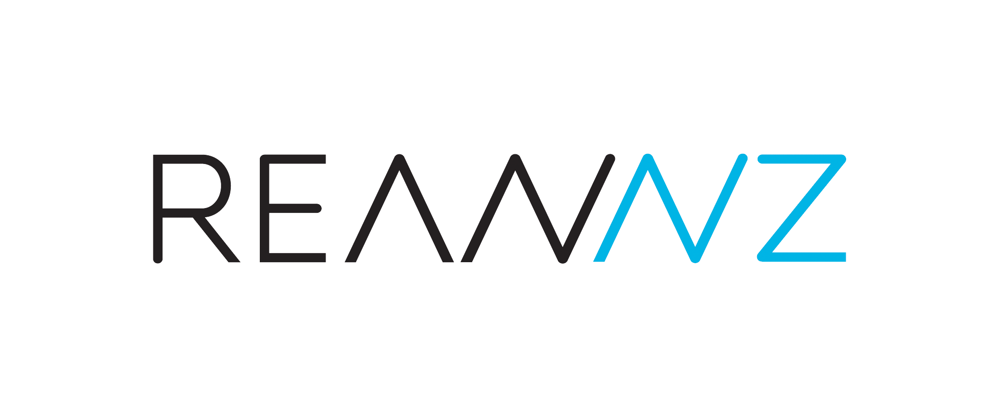

ML103
AI-Assisted Coding with R

In this three-hour workshop you use a generative AI assistant to write a complete, reproducible R report on the penguins dataset, plus a Slurm job script for running it on a cluster. You also learn to judge, check and disclose what the AI produces. Each coding step shows a weak prompt, the failures it typically causes, and a better prompt that fixes them. You write your own prompt before you see the better one.
Who This Is For
These notes suit researchers who already write basic R and want to use AI assistants without trusting their output blindly. You need these skills before you start:
- Base R: vectors, data frames, indexing with
[ , ], and reading help pages. - Basic ggplot2: building a simple plot with
ggplot()andgeom_*()layers.
If you follow the Python version, you need the equivalent skills instead: basic Python, a pandas DataFrame, and running code in Jupyter or VS Code.
If you need to build the R skills first, work through the GA Introduction to R course. It ends before pipes, dplyr and Quarto, which this workshop teaches.
You also need:
- R 4.3 or later, with RStudio. Posit Cloud and RStudio Server also work.
- Internet access and an AI assistant. Track A needs no sign-in (see Two Tracks).
- Or, for the Python version: Python 3.10 or later, with Jupyter or VS Code.
Setup explains how to install R and RStudio, or Python, plus Quarto and the packages.
Two Tracks
Both tracks run in the same room at the same time. Choose the one that matches the tools you can use.
| Track A: Web AI | Track B: Agents | |
|---|---|---|
| Who it is for | Everyone | Anyone with Claude access |
| Tool | Google Search AI Mode, with Duck.ai or logged-out ChatGPT as backups | Claude Code, run in a terminal |
| How you work | Write a prompt, copy the code, paste it into RStudio (or Jupyter or VS Code), run it, check it | The agent reads your project, edits files and runs R or Python. You approve each action. |
| Rules that apply | Ethics and your institution’s AI policy | The same, plus agent rules (REANNZ AGENTS.md is the worked example) |
Every episode has an Agent extension callout for Track B. It sets the same task as an agent task with acceptance criteria. Track B also asks the agent to render, review and fix its own output.
Schedule
The workshop runs for 180 minutes, including a 10-minute break after episode 05.
| # | Episode | Minutes |
|---|---|---|
| 00 | Welcome and setup | 10 |
| 01 | How LLMs work and AI ethics in research | 20 |
| 02 | Rules of the road: REANNZ policies and agent rules | 15 |
| 03 | Anatomy of a good prompt | 10 |
| 04 | Load and explore penguins: R · Python | 15 |
| 05 | Wrangle with dplyr or pandas: R · Python | 25 |
| Break | 10 | |
| 06 | Visualise with ggplot2 or seaborn: R · Python | 20 |
| 07 | Statistics, code you can run but do not yet understand: R · Python | 15 |
| 08 | Assemble the Quarto report and AI-use statement: R · Python | 20 |
| 09 | AI for Slurm scripts: review and write | 15 |
| 10 | Verify and wrap up | 5 |
| Total | 180 |
Episodes 04 to 08 build one report. If you fall behind, copy the checkpoint file for the episode you missed from r/checkpoints/ (or python/checkpoints/) and carry on. Instructors can find a minute-by-minute plan in instructors/timing.md.
How to Use These Notes
You can work through the notes alone, follow them in a taught session, or use them as reference later. They are plain Markdown, so they read on GitHub, print to PDF or open in any site generator. They depend on no particular platform, so you can use them on a laptop, Posit Cloud, a shared server or a cluster.
Start with episodes/00-welcome.md. Work through the episodes in order. Each episode gives you:
- A weak prompt to try yourself.
- The failure patterns that prompt typically produces.
- A better prompt, with a table that explains which part fixes which problem.
- A Check it step, where you verify the AI’s code against something you already know.
- A reference solution, hidden in a collapsible block until you want to compare.
Do the Check it step every time. Skipping it is the most common way to end up with a wrong report.
Python Version
The whole workshop also runs in Python. python/ is a full parallel version of episodes 04 to 08: the same penguins data, the same tasks and the same weak and better prompts, with pandas, seaborn and statsmodels in place of the tidyverse and ggplot2. It builds analysis.py and a Quarto report that renders with the Jupyter engine, and has its own checkpoints and reference solutions. Start at python/README.md.
The shared episodes (00 to 03, 09 and 10) apply to both languages. Where they show R code, they also give the Python equivalent, and episode 09 has Python job scripts in slurm/. You need Python 3.10 or later, Jupyter or VS Code, and Quarto. Setup has the details, and prompts/python-prompts.md collects the Python prompts.
Repository Layout
ml103_dev/
├── README.md This file
├── setup.md R and Python setup, for local, Posit Cloud and servers
├── episodes/ Shared episodes, for both languages
├── r/ R steps for episodes 04 to 08
│ ├── checkpoints/ Catch-up files for each episode
│ └── solutions/ Reference Quarto report
├── python/ Python steps for episodes 04 to 08 (full parallel version)
│ ├── checkpoints/ Catch-up files for each episode
│ ├── solutions/ Reference analysis.py and Quarto report
│ └── requirements.txt Python packages for pip
├── prompts/ Copy-paste library of weak and better prompts (R, Python, Slurm)
├── slurm/ Flawed script to review, and R and Python reference scripts
├── extras/ Deeper Track B material, and example agent rules files
├── instructors/ Timing, AI failure modes and demo notes
└── archive/python-llm/ Retired notebooks on running LLMs on HPC clustersLicence
The written content is licensed under Creative Commons Attribution 4.0 International (CC BY 4.0). The code is licensed under the MIT Licence. The palmerpenguins data is released under CC0 by its authors. LICENSE.md gives the details and the full MIT text.
Acknowledgements
- Palmer Penguins data. The workshop uses the
palmerpenguinsR package. Cite it as Horst AM, Hill AP, Gorman KB (2020). palmerpenguins: Palmer Archipelago (Antarctica) penguin data. R package. doi:10.5281/zenodo.3960218. The original data comes from Gorman KB, Williams TD, Fraser WR (2014). Ecological sexual dimorphism and environmental variability within a community of Antarctic penguins. PLoS ONE 9(3): e90081. doi:10.1371/journal.pone.0090081. - Genomics Aotearoa for the Introduction to R course that these notes build on.
- REANNZ for the logo, and for the Acceptable Use Policy and AI agent rules that episode 02 explains.
Copyright © 2026 Matt Bixley.